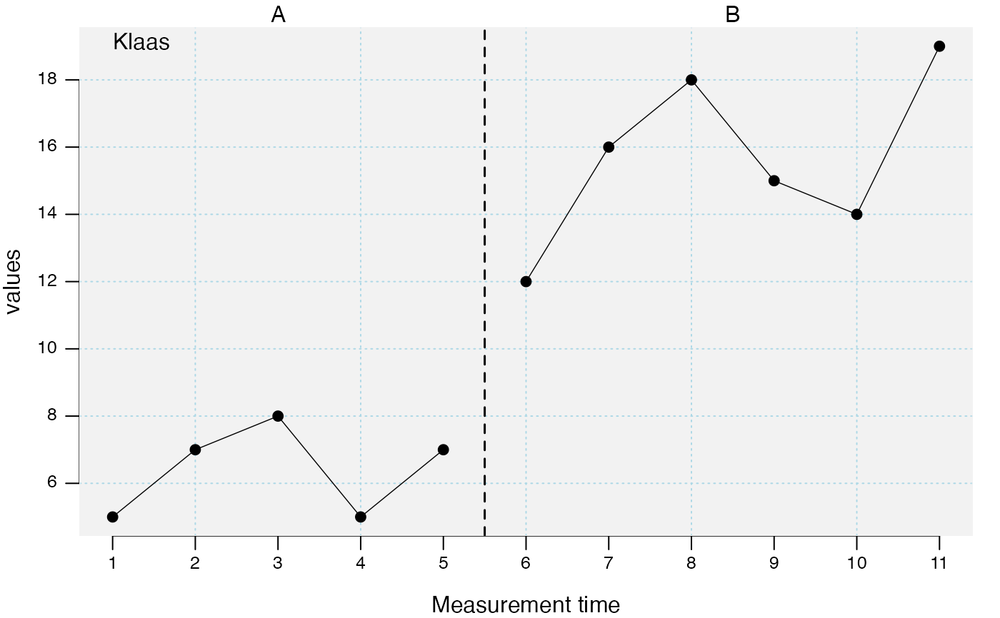
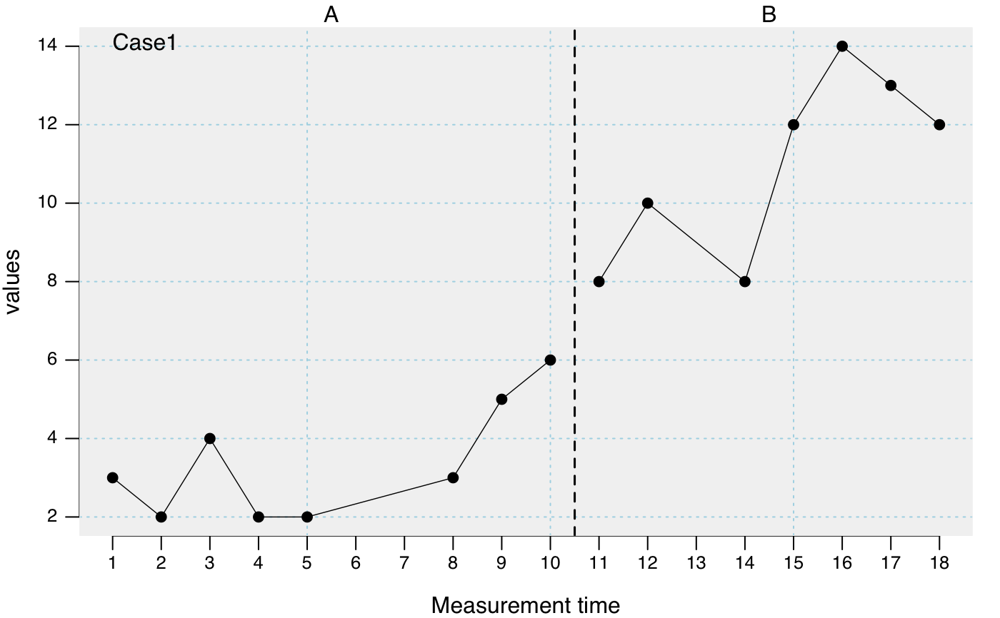

The class scdf stores single-case study data with one or more
single-cases.
makeSCDF(data, B.start = NULL, MT = NULL) scdf( values, B.start, mt, phase, phase.design, name, dvar = "values", pvar = "phase", mvar = "mt", ... )
| data | A single-case data frame. See |
|---|---|
| B.start | The first measurement of phase B (simple coding if design is strictly AB). |
| MT | Deprecated: Measurement times |
| values | A vector containing measurement values of the dependent variable. |
| mt | A vector defining measurement times. Default is |
| phase | A vector defining phase assignments. |
| phase.design | A vector defining the length and label of each phase.
E.g., |
| name | A name for the case. |
| dvar | Character string with the name of the dependent variable. Defaults to the attributes in the scdf file. |
| pvar | Character string with the name of the phase variable. Defaults to the attributes in the scdf file. |
| mvar | Character string with the name of the measurement time variable. Defaults to the attributes in the scdf file. |
| ... | Additional variables. E.g., |
Returns a single-case data frame scdf suitable for all
functions of the scan package. Multiple data sets (e.g. from Multiple
Baseline Designs) can be listed.
The scdf class is a wrapper for a list containing a dataframe for
each case.
If the dependent variable is a named vector then the names are extracted
to create a phase design (e.g., values = c(A = 2,3,5,4,3, B = 6,5,4,3) will create
an AB phase design with five and four measuresments).
An scdf contains several attributes:
dvar The name of the dependent variable.
phase The name of the phase variable.
mt The name of the measurement time variable.
author Information on the author of the data.
info Further information on the data. E.g., a publication.
dvar, phase, and mt are the defaults most of the scan function
use. You can change the values of the attributes with the scdf_attr function
(e.g., scdf_attr(exampleAB_add, "dvar") <- "depression" defines depression
as the dependent variable. Please notice that all scan functions
have arguments to define dvar, phase, and mt for a given analysis.
Juergen Wilbert
## Scores on a letter naming task were collected on eleven days in a row. The intervention ## started after the fifth measurement, so the first B phase measurement was 6 (B.start = 6). klaas <- scdf( c(5, 7, 8, 5, 7, 12, 16, 18, 15, 14, 19), B.start = 6, name = "Klaas" ) plot(klaas)# Alternative coding 1: klaas <- scdf( c(A = 5, 7, 8, 5, 7, B = 12, 16, 18, 15, 14, 19), name = "Klaas" ) # Alternative coding 2: klaas <- scdf( c(5, 7, 8, 5, 7, 12, 16, 18, 15, 14, 19), phase.design = c(A = 5, B = 6), name = "Klaas" ) ## Unfortunately in a similar SCDR there were no data collected on days 3 and 9. Use NA to ## pass them to the package. emmi <- scdf(c(5, 7, NA, 5, 7, 12, 16, 18, NA, 14, 19), phase.design = c(A = 5, B = 6), name = "Emmi" ) describeSC(emmi)#> Describe Single-Case Data #> #> Design: A B #> #> Emmi #> n.A 5 #> n.B 6 #> mis.A 1 #> mis.B 1 #> #> Emmi #> m.A 6.00 #> m.B 15.80 #> md.A 6.00 #> md.B 16.00 #> sd.A 1.15 #> sd.B 2.86 #> mad.A 1.48 #> mad.B 2.97 #> min.A 5.00 #> min.B 12.00 #> max.A 7.00 #> max.B 19.00 #> trend.A 0.20 #> trend.B 0.78## In a MBD over three persons, data were again collected eleven days in a row. Intervention ## starting points differ between subjects as they were randomly assigned. The three SCDFs ## are then combined in a list for further conjoined analyses. charlotte <- scdf(c(A = 5, 7, 10, 5, 12, B = 7, 10, 18, 15, 14, 19)) theresa <- scdf(c(A = 3, 4, 3, 5, B = 7, 4, 7, 9, 8, 10, 12)) antonia <- scdf(c(A = 9, 8, 8, 7, 5, 7, B = 6, 14, 15, 12, 16)) mbd <- c(charlotte, theresa, antonia) names(mbd) <- c("Charlotte", "Theresa", "Antonia") overlapSC(mbd)#> Overlap Indices #> #> Design: A B #> Comparing phase 1 against phase 2 #> #> Charlotte Theresa Antonia #> PND 66.67 85.71 80.00 #> PEM 83.33 100.00 80.00 #> PET 50.00 85.71 100.00 #> NAP 86.67 94.64 83.33 #> NAP.rescaled 73.33 89.29 66.67 #> PAND 72.73 81.82 81.82 #> TAU_U 0.49 0.71 0.69 #> Base_Tau 0.56 0.66 0.69 #> Diff_mean 6.03 4.39 5.27 #> Diff_trend 0.77 0.50 2.37 #> SMD 1.94 4.59 3.85## In a classroom-based intervention it was not possible to measure outcomes every day, but ## only on schooldays. The sequence of measurements is passed to the package by using a ## vector of measurement times. frida <- scdf( c(A = 3, 2, 4, 2, 2, 3, 5, 6, B = 8, 10, 8, 12, 14, 13, 12), mt = c(1, 2, 3, 4, 5, 8, 9, 10, 11, 12, 14, 15, 16, 17, 18) ) summary(frida)#> #A single-case data frame with one case #> #> Measurements Design #> 1 15 A B #> #> Variable names: #> values <dependent variable> #> mt <measurement-time variable> #> phase <phase variable> #>#> Describe Single-Case Data #> #> Design: A B #> #> Case1 #> n.A 8 #> n.B 7 #> mis.A 0 #> mis.B 0 #> #> Case1 #> m.A 3.38 #> m.B 11.00 #> md.A 3.00 #> md.B 12.00 #> sd.A 1.51 #> sd.B 2.38 #> mad.A 1.48 #> mad.B 2.97 #> min.A 2.00 #> min.B 8.00 #> max.A 6.00 #> max.B 14.00 #> trend.A 0.31 #> trend.B 0.71## example with two independent variables and four phases jim <- scdf( zvt = c(47, 58, 76, 63, 71, 59, 64, 69, 72, 77, 76, 73), d2 = c(131, 134, 141, 141, 140, 140, 138, 140, 141, 140, 138, 140), phase.design = c(A1 = 3, B1 = 3, A2 = 3, B2 = 3), dvar = "zvt" ) overlapSC(jim, phases = list(c("A1", "A2"), c("B1", "B2")))#> Overlap Indices #> #> Design: A1 B1 A2 B2 #> Comparing phases 1 + 3 against phases 2 + 4 #> #> Case1 #> PND 16.67 #> PEM 66.67 #> PET 66.67 #> NAP 68.06 #> NAP.rescaled 36.11 #> PAND 66.67 #> TAU_U 0.14 #> Base_Tau 0.27 #> Diff_mean 5.50 #> Diff_trend -0.31 #> SMD 0.52 #> #> Note. The following variables were used in this analysis: #> 'zvt' as dependent variable, 'phase' as phase ,and 'mt' as measurement time.